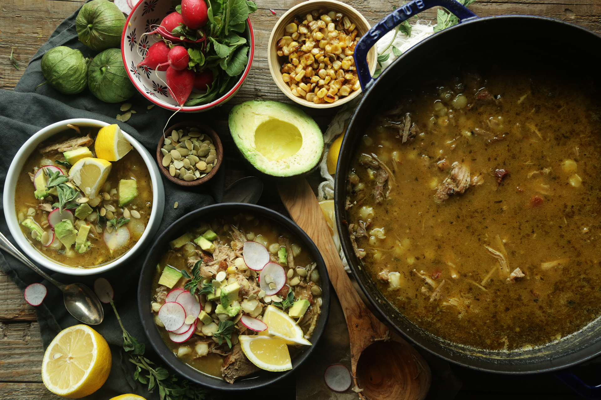

Pozole verde (green chicken soup)

Pozole Verde - A soup to meet the needs of many
Pozole verde is a green chicken soup made with tomatillos, a number of peppers to add a pop of heat, lots of lime juice, and a lesser known ingredient - hominy
This soup is very refreshing, spicy enough to make your nose run and hearty enough to keep to full of energy of hours on end. Not to mention you can add whatever toppings you like to make it your own!
Ingredients
- 1 whole chicken
- 2L of chicken stock
- 1 800g can of tomatillos
- 2 jalapenos
- 3 poblano peppers
- 1 white onion
- 7 cloves of garlic
- A handful of spinach
- 1 800g can of hominy
- 50g of pepitas
- 4 limes
- 2 tablespoons lard
Spices
- 1 tablespoon cumin
- 1 tablespoon ground coriander
- 3 bay leaves
- 1 teaspoon oregano
- Kosher salt to taste
- Cracked black pepper to taste
- 1/2 teaspoon all spice
Feel free to top with whatever toppings you'd like - thats the fun of pozole. Common topping include shredded iceberg, corn chips, torillas, sliced radish or even some avocado (sliced, diced, it's up to you)
Recipe
- Place the lard in a large cast iron pot and let it melt. After the lard has melted place the chicken in the pot over medium high heat and let it get some colour.
- Once the chicken has some colour pour in the chicken stock and add the bay leaves. Simmer the chicken in the stock for 45-55 minutes.
- Meanwhile, add the tomatillos, onion, jalapenos, poblanos, garlic, spinach, and the rest of the spices to a blender.
- After the chicken has cooked take it out of the pot and shred the meat of the carcass. Before you start shredding, pour the mixture from the blender in the stock, give it a mix and let it simmer.
- Rinse the hominy to get rid of liquid residue from the can and add that to the simmering soup mixture. Add the shredded chicken.
- Once everything has warmed up together, add the juice of 2 limes, season with more salt, and taste. Adjust by adding more lime juice or salt depending on your taste (I like mine with a lot of lime).
- Serve in soup bowl and add whatever toppings you'd like.